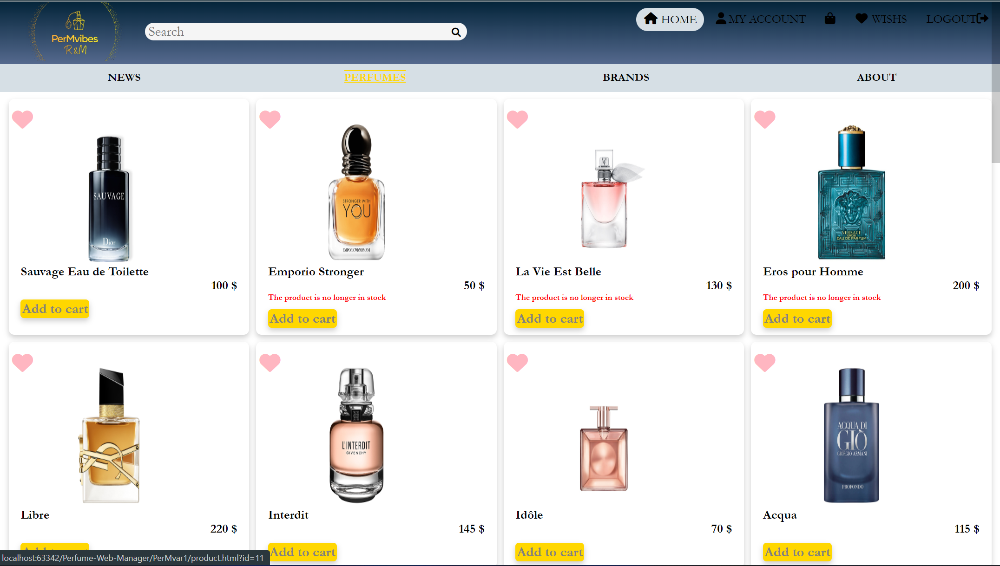
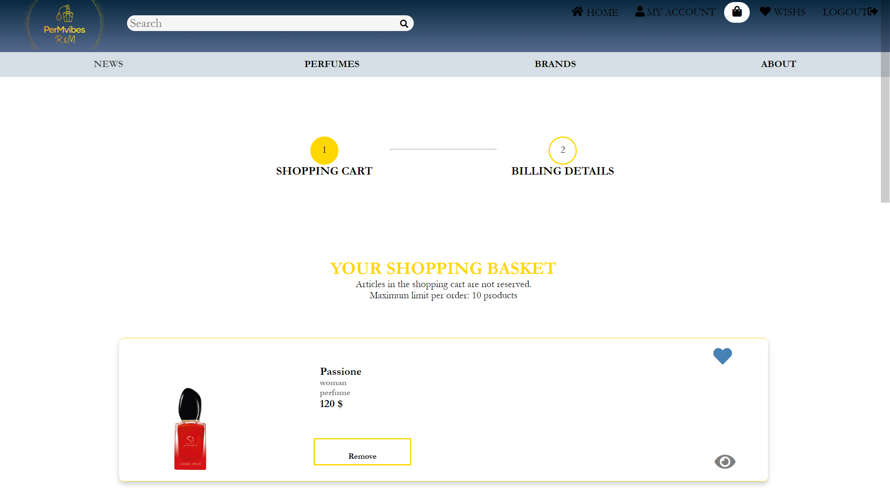
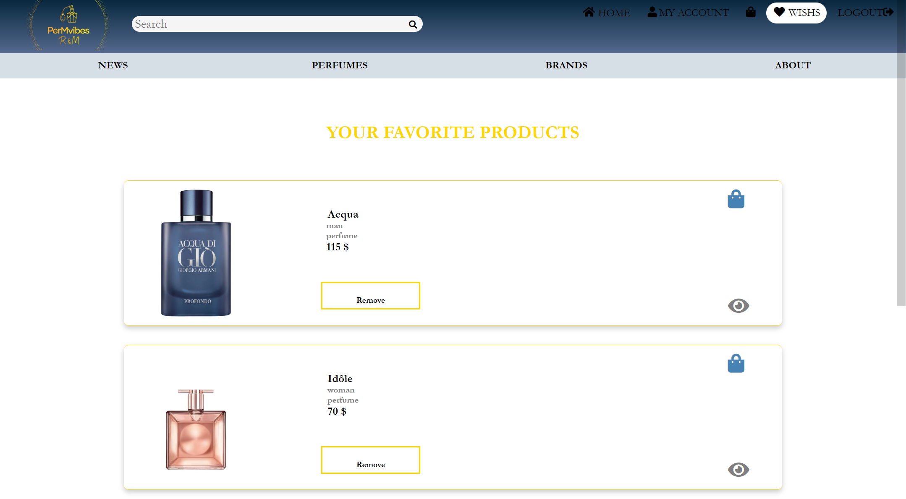
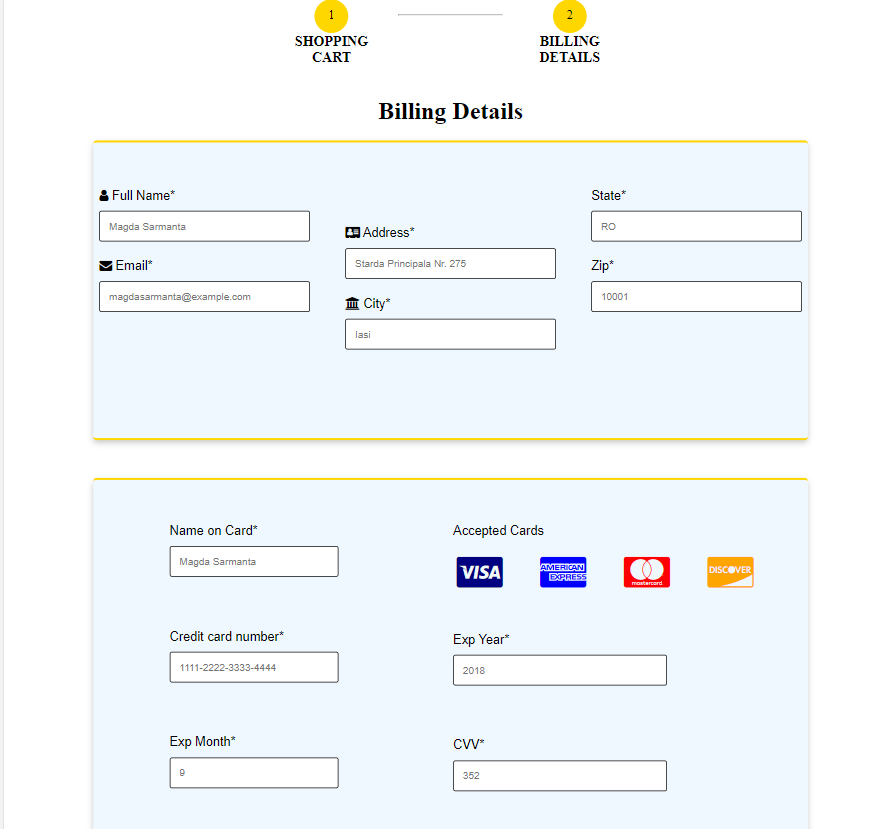
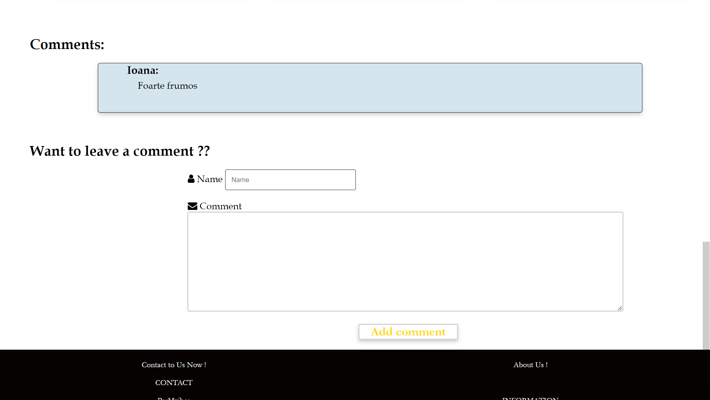
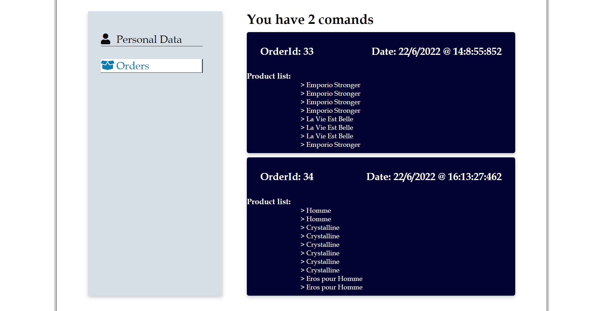

Introducere
Țel
PerMvibes este o aplicație web prin intermediul căreia se pot vizualiza și cumpăra diferite parfumuri. Produsele pot fi vizualizate atât de utilizatorii autentificați, cât și de cei care nu doresc să-și creeze un cont.
Convenții
Aplicația dorește să minimizeze efortul utlizatorului de a accesa produsele de interes. Astfel, pe pagina principală, utlizatorul găsește top 3 parfumuri ale ultimelor colecții, având posibilitatea de a accesa oricare dintre ele. De asemenea, în cadrul paginei de descriere a unui produs, utilizatorul găsește informații detaliate referitoare la prețul, valabilitatea stocului, ingredientele sale componente, aspecte legate de colecția din care face parte cât și sugestia a altor 3 produse cu care se găsesc aspecte comune.
Scopul produsului
Produsul are scopul de a furniza un mediu facil și plăcut, în care utilizatorul se poate informa despre parfumurile dorite, ingredientele sale cât și despre povestea colecțiilor din care fac parte. Site-ul urmărește atât componenta funcțională cât și cea a interfeței, oferind utilizatorului o experiență cât mai plăcută de navigare.
Referinţe
Pentru a crea un site cu o interfață cât mai utilă pentru utilizator, am documentat căteva site-uri utile a căror link se regăsește mai jos:
Descriere generală
Perspectiva produsului
PerMvibes este un site de parfumuri online care acceptă o serie de funcții pentru clientul care este ori logat, ori un simplu vizitator. Făcând o comparație cu un alt astfel de provider (i.e. Sephora), PerMvibes devine o opțiune viabilă când vine vorba de cumpărarea unui parfum, oferind utilizatorului o viziune mai largă asupra diferitelor tipuri de parfumuri .
Funcționalitățile produsului
Site-ul dispune de multiple opțiuni care îți vin în ajutor când dorești să achiziționezi un parfum. În primul rând, ai opțiunea de a căuta parfuml dorit după nume, un ingredient pe care vrei să îl aibă, după brand sau după sezonul al cărui miros vrei să ți-l imprime. În cazul în care are nelămuriri după citirea descrierii, vizitatorul poate lăsa un comentariu cu o anumită întrebare sau un review. Mai mult decât atât, utilizatorul își poate face un cont, iar prin intermediul său poate adăuga 10 produse în coș pentru a le comanda sau le poate salva în secțiunea de favorite. Fiecare utilizator își poate vedea comenzile date în secțiunea MyAccount. Administratorul aplicatiei are posibilitatea de a accesa rapoarte referitoare la stocul existent și situația vânzărilor în funcție de brand, sezon și comenzile utilizatorilor, cât și să facă import/export de date CSV.
Categorii de utilizatori
Aplicația este destinată, în principal, utilizatorilor care doresc să achiziționeze un parfum sau oricărei persoane ce are acces la Internet și un browser web. Se presupune că utilizatorul este suficient de familiarizat cu un computer pentru a opera browserul, tastatura și mouse-ul și este capabil să navigheze către, de la și în interiorul site-urilor web simple.
Mediu de operare
Fiind o aplicatie Web, PerMvibes este scalabilă în orice browser ce rulează HTML, CSS,JS, neținând cont de o versiune anume a sistemului de operare a device-ului pe care rulează aplicația.
Design și constrângeri de implementare
PerMvibes este o aplicație prin intermediul căreia îți poți alege și achiziționa parfumul preferat. Cu toate acestea, site-ul vine și cu câteva limitări. Astfel, utilizatorul poate comanda maxim 10 produse într-o singură comandă. De asemenea, pe pagina unui produs în secțiunea de produse recomandate, în care apar alte produse din aceeași categorie există o limitare de maxim 3 produse recomandate. Precum și în secțiunea de comentarii, unde apar ultimele 5.
Documentație pentru utilizator
Secțiunea "FAQ" a site-ului este gândită pentru a răspunde utilizatorului la cele mai frecvente întrebări pe care acesta le poate avea în ceeea ce privește interacțiunea cu aplicația. Întrebările din secțiune sunt selectate dintre intrebările frecvente ale utilizatorilor, iar modalitatea lor de afișare oferă utilizatorului o navigare rapidă și o identificare exactă a soluțiilor la majoritatea problemelor sau neclarităților pe care le poate avea în ceea ce privește interacțiunea cu site-ul.
Manual de utilizare
Înregistrare
Utilizatorii care doresc opțiunile de a salva un produs în coș, favorite sau de a plasa o comanda, sunt nevoiți să se înregistreze și să se autentifice folosind credentialele lor unice. Datele oferite vor fi trimise de către formularul de înregistrare, doar după ce au fost validate corespunzător. Utilizatorul care dorește să-și creeze un cont trebuie mai întâi să acceseze pagina de "Register now!" și să completeze formularul corespunzator cu datele potrivite (credențialele utilizatorului). De asemenea, formularul are mai multe constrângeri asociate și astfel fiecare câmp trebuie completat, nu există câmpuri opționale. De asemenea, email-ul introdus trebuie să fie valid și să nu existe un alt utilizator cu același email înregistrat deja în baza de date. De asemenea, dacă s-a apasat "submit", dar sunt date greșite, vor apărea mesaje sugestive referitor la problema apărută. Un cont realizat cu succes va fi însoțit de o redirecționare a user-ului spre pagina de Login, unde acesta va trebui să introducă datele contului realizat pentru a se loga.

Autentificare
Utilizatorii care dețin un cont se pot autentifica pe pagina de login în care trebuie să-și introducă adresa de email și parola. Datele introduse de către utilizator vor fi validate. În cazul în care logarea a avut succes, utilizatorul va fi redirectat către pagina de home. Toate mesajele de eroare sau de nerespectarea unor constrângeri în ceea ce privește completarea formularului vor fi sugestiv oferite utilizatorului pentru a corecta eventualele greșeli.

Căutarea unui produs după un atribut
Această funcționalitate permite oricărui utilizator (autentificat sau nu) să găsească o gamă de produse bazată pe un atribut specificat. Căutarea se face pe filtre de nume, brand, sezon și ingrediente. Căutarea se face din orice pagina de pe site, prin introducerea unui atribut în bara de căutare și apăsarea iconiței de search din dreapta.

Utilizatorul este redirecționat pe pagina PRODUCTS unde sunt afișate produsele dacă se găsesc produse potrivite cu atributul căutat, altfel pe pagina este afisat mesajul "0 results for this search". Pe pagina unui produs, sunt puse tag uri referitoare la sezonul din care face parte produsul și cele 4 ingrediente de bază. La click ul utilizatorului pe unul dintre ele, acesta va fi la fel redirecționat pe pagina PRODUCTS considerandu-se drept atribut de căutare tag-ul pe care acesta a dat click.
Salvarea produsului în coș
Aceasta este una dintre funcționalitățile de bază ale ale aplicației. Utilizatorul logat poate salva în coșul de cumpărături produsele disponibile în stoc prin apăsarea iconiței cu coș când sunt afișate produsele pe paginile PRODUCTS și WISHES sau de pe pagina produsului prin apăsarea butonului "Add to Cart". Aplicația permite adăugarea în coș a produselor limitat, numărul maxim reprezentând valoarea stocului în momentul respectiv. Conținutul coșului poate fi vizualizat prin apăsarea iconiței cu coș din bara de navigare.
Salvarea produsului în secțiunea de Wishes
Utilizatorul logat poate salva în secțiunea de favorite o singura dată un produs care se află în stoc, prin apasarea iconiței cu inimă când sunt afișate produsele pe paginile PRODUCTS și a coșului sau de pe pagina produsului prin apăsarea butonului "Add to Wishes". Conținutul coșului poate fi vizualizat prin apăsarea butonului WISHES cu coș din bara de navigare.
Plasarea unei comenzi
Opțiunea de plasare a unei comenzi apare în momentul în care utilizatorul are în coș cel puțin un produs și apasă butonul "CONTINUE". Acesta trebuie să completeze un form cu datele referitoare la adresă și plată. Datele sunt verificate, după validarea datelor se trimite comanda. În cazul unor date invalide îi sunt afișate mesaje de eroare în care sunt semnalate problemele referitoare la completarea formularului sau dacă între timp stocul produselor alese a fost epuizat.
Vizualizarea si adăugarea unui comentariu
Pe pagina unui produs, utilizatorul(autentificat sau nu) poate vizualiza ultimele 5 comentarii lăsate sau poate adăuga el un comentariu.
Vizualizarea comenzilor date
Utilizatorul poate vizualiza comenzile date în secțiunea de MyAccount prin apăsarea secțiunii de "Orders" unde apar informatii despre data în care a fost plastă comanda, produsele care au fost comandate și id-ul ei.
Referințe bibliografice
- Scholarly HTML , de Tzviya Wiley Siegman & Robin Berjon
- What is Scholarly HTML? , de Robin Berjon & Sebastien Ballesteros
- Sabin Corneliu Buraga , Site-ul disciplinei "Tehnologii Web" parte a UAIC
- W3School